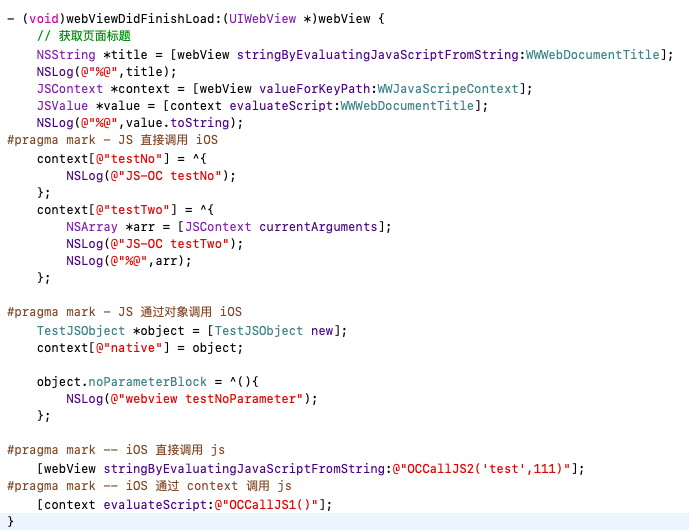
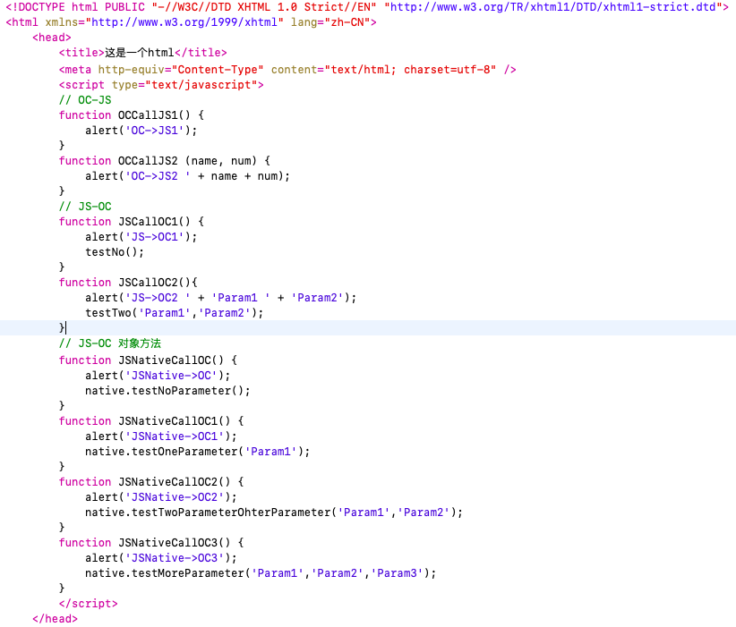
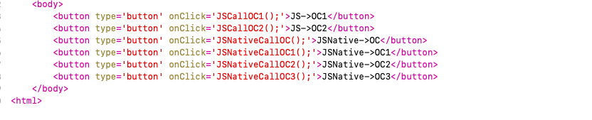

OC && JS交互第三方框架:
JavaScriptCore的使用（iOS7后引用）
JSContext：给JS提供运行的上下文环境,通过-evaluateScript:方法就可以执行JS代码
JSValue：JS和OC数据和方法的桥梁,封装了JS与OC中的对应的类型，以及调用JS的API等
JSManagedValue：管理数据和方法的类
JSVirtualMachine：处理线程相关，使用较少
JSExport：这是一个协议，如果采用协议的方法交互，自己定义的协议必须遵守此协议
注:
JSContext 和 JSValue :
JSVirtualMachine 为JavaScript的运行提供了底层资源,JSContext为JS其提供着运行环境,通过evaluateScript方法就可以执行一段JavaScript脚本,并且如果其中有方法,变量等信息都会被存储在其中以便在需要的时候使用。而JSContext的创建都是基于JSVirtualMachine(initwithVirtualMachine:),如果使用init进行初始化,那么在其内部会自动创建一个新的JSVirtualMachine对象然后调用前边的初始化方法。
JSValue是JSContext执行后的返回结果,封装了JS与OC中的对应的类型,可以方便的在两种类型之间转换,可以说是JS和OC之间互换的桥梁
| Objective-C type | JavaScript type |
|---|---|
| nil | undefined |
| NSNull | null |
| NSString | string |
| NSNumber | number, boolean |
| NSDictionary | Object object |
| NSArray | Array object |
| NSDate | Date object |
| NSBlock (1) | Function object (1) |
| id (2) | Wrapper object (2) |
| Class (3) | Constructor object (3) |
JSVirtualMachine : “A JSVirtualMachine instance represents a self-contained environment for JavaScript execution.”，这段话是官方文档中对JSVirtualMachine的定义，我们使用JSVirtualMachine的目的主要有两个：支持JS并发执行，管理用于衔接JS 与 OC 代码的对象的内存。
OC && JS交互
默认在该代理方法中执行
- (void)webViewDidFinishLoad:(UIWebView *)webView
static NSString *const WWJavaScripeContext = @"documentView.webView.mainFrame.javaScriptContext";
static NSString *const WWWebDocumentTitle = @"document.title";
1. OC调用JS
使用- (NSString )stringByEvaluatingJavaScriptFromString:(NSString )script;
// 获取当前页面的title
NSString *title = [webview stringByEvaluatingJavaScriptFromString: WWWebDocumentTitle];
// 获取当前页面的url
NSString *url = [webview stringByEvaluatingJavaScriptFromString:@"document.location.href"];
使用JSContext
JSContext *context = [webView valueForKeyPath:WWJavaScripeContext];
JSValue *value = [context evaluateScript:WWWebDocumentTitle];
NSLog(@"%@",value.toString);
2. JS调用OC
JS直接调用OC
JSContext *context = [webView valueForKeyPath:WWJavaScripeContext];
context[@"testNo"] = ^{
NSLog(@"JS-OC testNo");
};
context[@"testTwo"] = ^{
NSArray *arr = [JSContext currentArguments];
NSLog(@"JS-OC testTwo");
NSLog(@"%@",arr);
};
在Block内都不要直接使用其外部定义的JSContext对象或者JSValue，应该将其当做参数传入到Block中，或者通过JSContext的类方法+ (JSContext *)currentContext;来获得。否则会造成循环引用使得内存无法被正确释放。
JS通过对象调用OC
TestJSObject 对象的定义:
.h 文件
#import <Foundation/Foundation.h>
#import <JavaScriptCore/JavaScriptCore.h>
@protocol TestJSObjectProtocol <JSExport>
//此处我们测试几种参数的情况
- (void)testNoParameter;
- (void)testOneParameter:(NSString *)value;
- (void)testTwoParameter:(NSString *)value
OhterParameter:(NSString *)other;
JSExportAs(testMoreParameter,
- (void)testMoreParameter:(NSString *)one two:(NSString *)two three:(NSString *)three
);
@end
typedef void (^DDOCJSNoParameterBlock)();
@interface TestJSObject : NSObject<TestJSObjectProtocol>
@property (nonatomic, copy) DDOCJSNoParameterBlock noParameterBlock;
@end
.m 文件
#import "TestJSObject.h"
@implementation TestJSObject
- (void)testNoParameter {
NSLog(@"this is ios testNoParameter");
if (self.noParameterBlock) {
self.noParameterBlock();
}
}
- (void)testOneParameter:(NSString *)value {
NSLog(@"this is testOneParameter = %@",value);
}
- (void)testTwoParameter:(NSString *)value
OhterParameter:(NSString *)other {
NSLog(@"this is testTwoParameter = %@ other = %@",value,other);
}
- (void)testMoreParameter:(NSString *)one two:(NSString *)two three:(NSString *)three {
NSLog(@"this is OneParameter=%@ OneParameter=%@ OneParameter=%@",one,two,three);
}
@end
通过对象调用方法
TestJSObject *object = [TestJSObject new];
context[@"native"] = object;
object.noParameterBlock = ^(){
NSLog(@"webview testNoParameter");
};
OC代码见下图:

JS代码见下图

